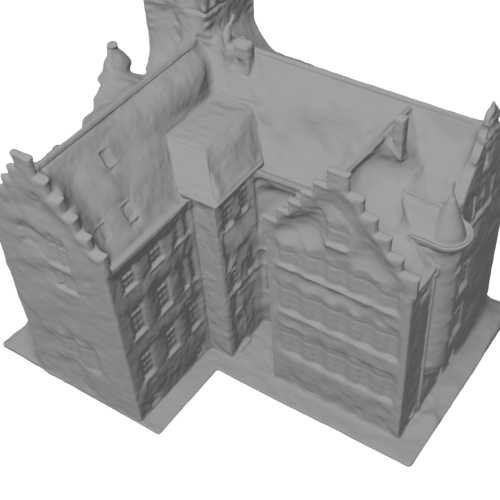
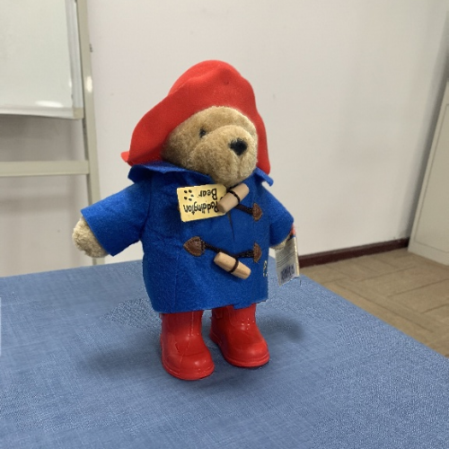
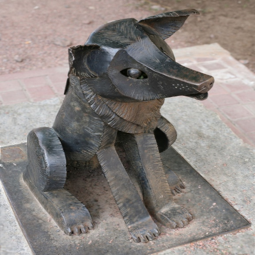
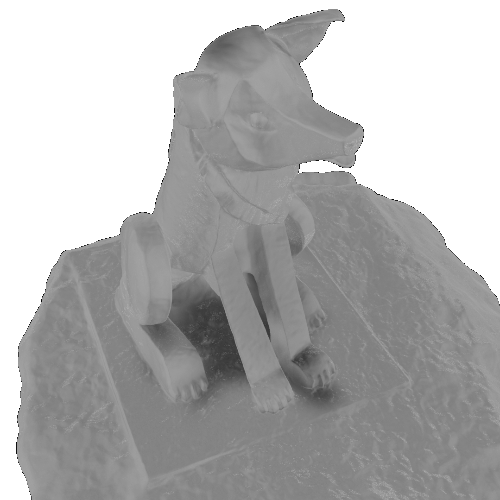
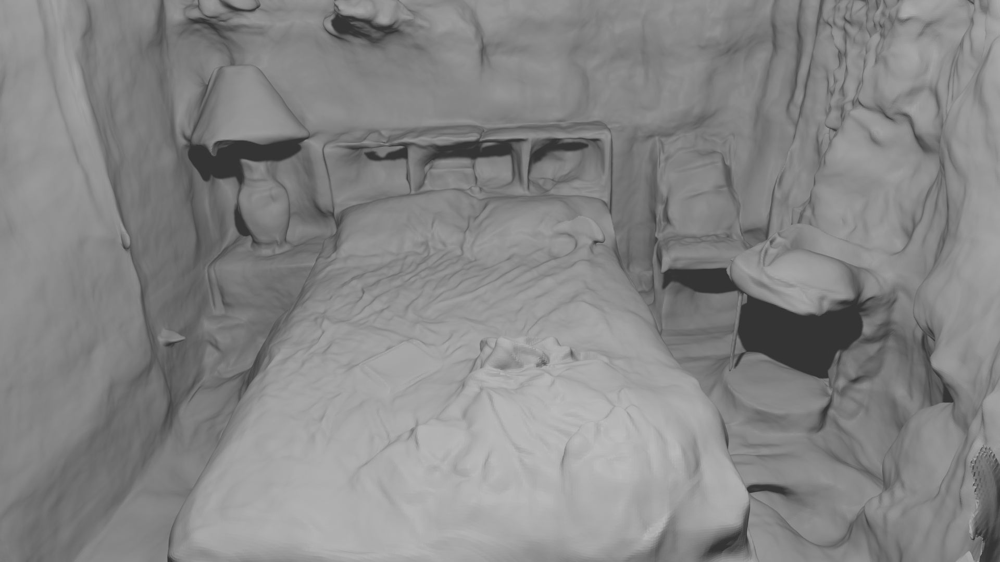

Joint Optimization
Camera poses are optimized with the SDF geometry and color networks instead of being treated as fixed inputs.
Faculty of Engineering, Cairo University
NeurIPS 2023 UniReps Workshop

Neural implicit surface methods can recover difficult geometry, including thin structures and non-Lambertian surfaces, but they usually assume accurate camera parameters. NoPose-NeuS relaxes that assumption by extending NeuS to optimize camera poses together with the geometry and color networks.
The paper represents camera poses with an MLP and adds multi-view feature consistency plus rendered depth supervision. These constraints help the method estimate camera poses while preserving high-quality reconstructed surfaces.
Camera poses are optimized with the SDF geometry and color networks instead of being treated as fixed inputs.
Each camera index is mapped through Gaussian Fourier features, then decoded by an MLP into rotation and translation parameters.
Multi-view feature consistency and rendered depth loss guide the pose estimates and reduce degenerate surface solutions.
The paper reports that NoPose-NeuS preserves competitive surface quality while estimating camera poses, and it outperforms COLMAP on most DTU Chamfer-distance comparisons.











On larger scenes, the same optimization idea is used to recover surfaces without relying on precomputed accurate camera poses.


@inproceedings{
sabae2023noposeneus,
title={NoPose-NeuS: Jointly Optimizing Camera Poses with Neural Implicit Surfaces for Multi-view Reconstruction},
author={Mohamed Shawky Sabae and Hoda A. Baraka and Mayada Hadhoud},
booktitle={UniReps: the First Workshop on Unifying Representations in Neural Models},
year={2023},
url={https://openreview.net/forum?id=TOp8uT3DZ9}
}